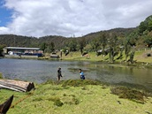

| PRINCIPAL
HISTORIA CURIOSIDADESUBICACION CONTACTO |
|
En el sur de México, dentro del estado de Oaxaca, se encuentra La Laguna Guadalupe, una belleza natural poco conocida que forma parte del municipio de Putla Villa de Guerrero. Esta comunidad se integra a la región triqui. |
 |
Se ubica aproximadamente a 19 kilómetros de la cabecera municipal de Putla y a 38 kilómetros de la ciudad de Tlaxiaco. Las coordenadas geográficas de La Laguna Guadalupe son 17°00′ N de latitud y 97°55′ O de longitud. |
|